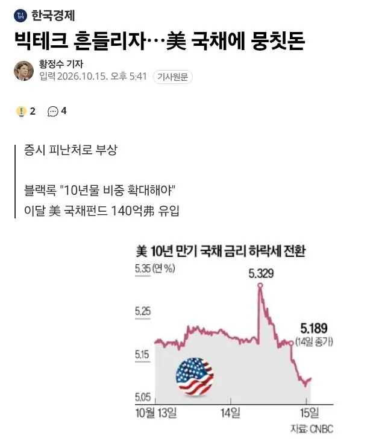

당분간 소비자 물가가 계속 치솟을거고, 덕분에 기준금리는 계속 인상될거고, 그럼 기업들이 투자를 위한 대출을 망설일거고
이럴땐 채권 이자 받아먹는게 주식 투자 수익률보다 높다고 판단한 글로벌 투자사들이 채권 매입에 열을 올리는중
요약
미국 증시 망해서

당분간 소비자 물가가 계속 치솟을거고, 덕분에 기준금리는 계속 인상될거고, 그럼 기업들이 투자를 위한 대출을 망설일거고
이럴땐 채권 이자 받아먹는게 주식 투자 수익률보다 높다고 판단한 글로벌 투자사들이 채권 매입에 열을 올리는중
요약
미국 증시 망해서
난 2700만 ... ㅅㅂ
이게 왜 네꺼야
크?게
미국채가 하루에 0.15%움직이면 꽤 크게 움직이는거라네요 하루 0.10% 변화도 잘 안보이는 수준이라함 보통 0.05%단위 변동
왜 하락해도 5.2냐아앗!
지금 5.081 임
채권시장이 규모가 존나 커서 0.1%만 움직여도 진짜 큰거임
난 판적이 없으니 이 손실은 없는것이나 다름없다 난 돈을 번적도 잃은적도 없는것이다 끄으윽
이상하다 분명 슈카가 주식이랑 미국채는 상호보완관계랬는데..
spym 다음달부터 추가매수해야겠다
미장은 걱정이 안됨. 국장이 문제지
메모리 반도체를 흔드는 세력이 분명 있음
그걸로 이득보는 애들
채권으로 흘러간돈은 어지간하면 안돌아오는데 주식은 상승동력 잃은거지
내 200만원이 어디갔지